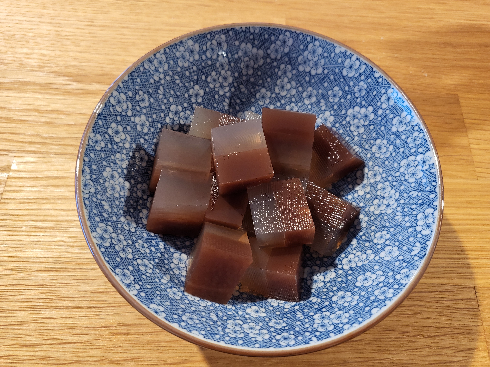

Erfrischender veganer Wackelpudding, der nicht sauer ist!

Zutaten (Menge ×1)
Gib die gewünschte Menge an:
Vanille-Ebene
Wasser (zimmerwarm)
Zucker
Vanillezucker
Agar Agar Pulver
Schoko-Ebene
Wasser (zimmerwarm)
Zucker
Back-Kakao
Agar Agar Pulver
Utensilien
1 L Topf
Schneebesen
Suppenkelle
Hitzebeständige Form die 1,5 Liter fasst, z.B. Auflaufform.
Alle Zutaten für die Vanille-Ebene in den Topf geben und den Herd auf Max stellen.
Während das Wasser aufwärmt, stetig mit dem Schneebesen rühren.
Sobald das Wasser blubbert, sofort den Herd ausschalten und den Topfinhalt in die Form kippen.
Die Form zum Abkühlen an einen kühlen Ort stellen.
Nach ca. 15 – 20 Minuten die Fingerprobe machen: Sachte mit der Fingerkuppe auf die Pudding-Oberfläche fassen. Wenn der Finger trocken bleibt, hat sich eine Haut gebildet und man kann mit dem nächsten Schritt fortfahren. Achtung: Wartet man zu lange, härtet der Pudding so sehr aus, dass die zweite Schicht nicht auf der ersten Schicht haften wird.
Alle Zutaten für die Schoko-Ebene in den Topf geben und den Herd auf Max stellen.
Wie zuvor stetig umrühren und den Herd sofort ausstellen, sobald das Wasser aufkocht.
Mit dem Topf und einer Suppenkelle zur Puddingform gehen (nicht andersherum, die Puddingform sollte nicht bewegt werden!).
Mit der Suppenkelle die Schoko-Flüssigkeit schöpfen und sehr nah über der Puddingoberfläche langsam verteilen.
Den Pudding vollständig abkühlen lassen. Anschließend im Kühlschrank aufbewahren und vor dem anschneiden am besten über Nacht erkalten lassen.
Wenn die Form eine dekorative Kontur hat, kann man den Pudding zum Servieren später auf einen Teller stürzen.